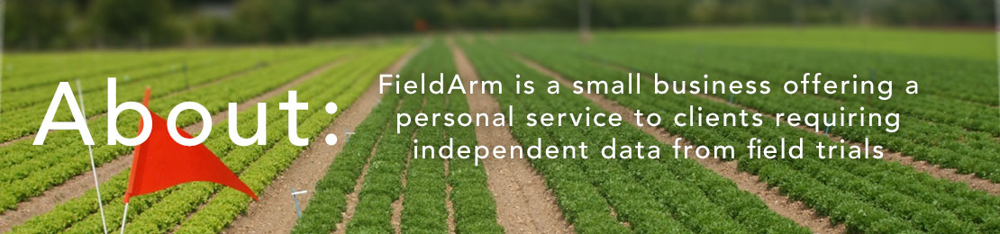

FieldArm is lead by two agronomists who have many years of agricultural and trials expertise. Both hold BASIS and NPTC qualifications. Since our inception in 2009, we have conducted over 300 trials in the UK for most of the multi-national agrochemical companies.
Official Recognition
- FieldArm is an Officially Recognised Contractor by CRD for Efficacy/Selectivity trials in UK
- Recognised for trials in categories Agriculture/ Horticulture and Stored Crops
- Certification Number ORETO 348
- Expiry date of current ORETO Certificate is 31st January 2019
Geographical options for trials
- Head Office/Base 1 located in Essex, UK (close to Stansted Airport 35 mins) and within 50 miles of most crops and soils typical of UK
- Base 2 located on Suffolk/Essex border
- Sub-contractors in Scotland and Ireland
- Will travel to any area if target cannot be found locally
Types of Trials and Situations
- Efficacy and Selectivity trials
- Conducted in a wide range of agricultural/non agricultural situations
- Herbicides, fungicides, insecticides, plant growth regulator, molluscicides, acaracides, biocides.
- Conducted on farms, nurseries, non-cropped land, pastures, golf courses, lawns, railway, fruit farms, turf farms, glasshouse, forestry and more.
Typical Crops
Cereals, carrot, outdoor lettuce, cereal stubble, grassland, golf and amenity turf, shrubs and trees, soft fruit (strawberry, raspberry), top fruit (apple/pear/plum), non-crop (railway, path, cemetery), forestry, sugar beet, beans, bulb onions, cabbage, potatoes, oilseed rape, roses, protected crops, tree stumps, lucerne, vegetables, herbs, salad crops, container plants.
Weeds, pests and diseases
- Any target required can be found in any situation
- Specialists in amenity situations eg. turf diseases such as fusarium patch; turf weeds; turf pests such as chafer grubs and leatherjackets
- Specialists in agricultural situations- 2 ex farmers in Team
Services offered
- Plan and Conduct Efficacy Trials in UK
- Produce technical reports tailored to clients needs, using ARM8 software
- Arrange/conduct demonstration trials
- Act as Study Director for trial programmes
- Arrange work with sub-contractors on behalf of clients
FieldArm Equipment
- FieldArm has a range of equipment designed for all types of small plot trials
- FieldArm can hire equipment or work with contractors to accommodate any larger scale trials (eg. Harvester, tractor)
- FieldArm trials are largely conducted on farms or golf turf/nursery, in commercial crop situations
- FieldArm has access to glasshouses and areas of land if required to conduct trials